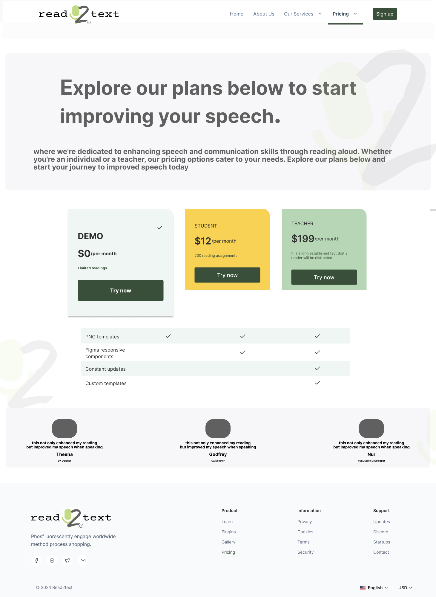

Finalist prototype · 3-month build
Read2Text — homework a specialist can trust.
Speech-language pathologists (SLPs) and reading specialists still send worksheets home. They can’t tell if the practice happened. Read2Text is AI fluency practice — anytime, on any device — with progress the adult can actually see.
